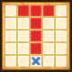

| Lv: | 140 |
|---|---|
| HP: | |
| MP: | |
| ATK: | |
| DEF: | |
| AGL: | |
| WIS: | |
| Move: | |
| Weight: | 50 |
| Weaknesses: |  |
 |
/ |  |
 |
|---|---|---|---|---|---|
| Resistances: |  |
 |
/ |  |
 |
| Immunities: |  |
| Family: |  |
Role: |  |
Element: |  |
|---|
Note: All perks/abilities denoted with an * are using unofficial translations
| Abilities | ||||||
|---|---|---|---|---|---|---|
| Level | Type | Name | MP | Element | Range | Description |
| 1 |  |
Battle Bellow* バトルクライ |
28 |  |
 Self |
Raises the user's Tension for 1 turn, raises damage dealt for 3 turns |
| 33 |  |
Detonative Sword* デトネイトソード |
127 |  |
 T (Long) |
Deals major Bang-type spell damage proportional to ATK to all enemies in area of effect, often raises damage taken for 3 turns |
| 52 |  |
Improvised Gigagash* 我流ギガブレイク |
80 |  |
1-3 |
Deals major Zap-type physical damage (380% potency) to 1 enemy |
| 80 |  |
Armour Purge* アーマーパージ |
85 | |
1-2 |
Sacrifices self to deal major surehit martial damage proportional to ATK to 1 enemy, greatly raises damage taken for 3 turns |
| Base Perks | ||
|---|---|---|
| Level | Name | Description |
| 1 | ATK +15 | Raises max ATK by 15 |
| 1 | DEF +20 | Raises max DEF by 20 |
| 1 | Undying Obsession* 亡者の執念 |
Does not get KO'd when HP hits 0 Unit will be KO'd at the end of its next action This perk can be triggered by poison, special effect spaces, ally attacks, and reflected attacks, as well as counterattacks, follow-ups, and other attacks or effects triggered by perks |
| 110, 120, 130, 140 | Armour Purge* potency +2% | Raises Armour Purge* potency by 2% |
| Awakening Perks | ||
|---|---|---|
| Awakening | Name | Description |
| 1 | A Restless Journey to Become the Strongest* 最強の称号を求めさまよう者 |
Action start on odd turns until turn 10: Raises ATK, DEF, and AGL for 3 turns Battle start: If there are 3 or more Inorganic allies (incl. self) in the party: Raises ATK for 3 turns |
| 2 | Sizz Res +25 | Raises Sizz resistance by 25 |
| 3 | Wanderer's Teachings* 流浪の心得 |
Battle start, action start, or when revived: Reduces damage taken by 15% if the user's HP is 20% or over Raises ATK by 30% if the user's HP is 20% or less |
| 3, 5 | Armour Purge* potency +5% | Raises Armour Purge* potency by 5% |
| 4 | Crack Res +25 | Raises Crack resistance by 25 |
| 5 | Elemental Core* エレメントコア |
Raises max HP by 100 If there are 3 or more Inorganic allies (incl. self) in the party: Raises max HP of all Inorganic allies (incl. self) by 50 |
| 1, 2, 3, 4, 5 | Stats Up | Raises HP, MP, ATK, DEF, WIS and AGL by 5% |